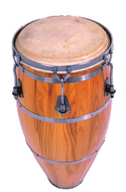
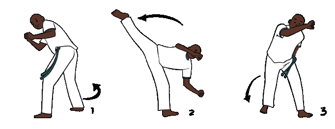
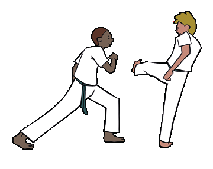

LUTAS
Iniciando a busca
Ao trabalhar com essa unidade temática, espera-se que os alunos desenvolvam as seguintes habilidades e competências:
• (EF67EF14) Experimentar, fruir e recriar diferentes lutas do Brasil, valorizando a própria segurança e integridade física, bem como as dos demais.
• (EF67EF15) Planejar e utilizar estratégias básicas das lutas do Brasil, respeitando o colega como oponente.
• (EF67EF16) Identificar as características (códigos, rituais, elementos técnico-táticos, indumentária, materiais, instalações, instituições) das lutas do Brasil.
• (EF67EF17) Problematizar preconceitos e estereótipos relacionados ao universo das lutas e demais práticas corporais, propondo alternativas para superá-los, com base na solidariedade, na justiça, na equidade e no respeito.
• Competências específicas: 2, 5, 6, 7, 10
• Competências gerais: 1, 3, 9
• Competências de linguagens: 1, 2, 3
A luta é uma prática corporal entre duas ou mais pessoas, na qual os participantes empregam técnicas, táticas e estratégias específicas para imobilizar, desequilibrar, atingir ou excluir o oponente de determinado espaço, combinando ações de ataque e defesa. Com o tempo, as lutas ganharam destaque e, atualmente, vemos suas manifestações em campeonatos, filmes, desenhos e jogos eletrônicos.
Elas vêm se tornando, cada vez mais, parte da cultura dos brasileiros.
Algumas são práticas corporais trazidas pelas ondas migratórias e, muitas vezes, adaptadas no país. Pergunte aos alunos: As lutas estão presentes em nossa sociedade? Quais tipos de lutas vocês conhecem e que movimentos são necessários para realizá-las? Quais filmes ou desenhos já assistiram que havia lutas? Elas foram retratadas como prática corporal ou como forma de violência? Havia mulheres nessas lutas? Como são vistas as mulheres que optam pela prática de esportes considerados masculinos? Que tipo de esporte as mulheres podem ou não podem praticar? Qual tipo de luta é mais praticada na sua região? Há mulheres que praticam essas lutas?
As lutas, no decorrer do tempo, foram muitas vezes associadas a alguns conceitos, preconceitos e estereótipos, portanto, promova atividades que visem à superação dos preconceitos e limites de gênero no esporte. Mostre as imagens a seguir aos alunos, para que observem o espaço conquistado pelas mulheres nas lutas.
As lutas mais praticadas atualmente no Brasil são: judô, jiu-jítsu, muay thai, capoeira, boxe e krav maga. Algumas lutas de origem brasileira: jiu-jítsu brasileiro, capoeira, huka-huka e luta marajoara.
EDUCAÇÃO FÍSICA 70

Corpo em ação
Lutas do Brasil
O jiu-jítsu originou-se no Japão e foi popularizado no Brasil, onde foi modificado e se tornou o Brazilian Jiu-Jitsu, que é uma forma diferente de lutar, mas com os mesmos princípios da luta original.
A capoeira, em 2014, tornou-se a quinta manifestação cultural brasileira reconhecida pela Unesco como Patrimônio Cultural Imaterial da Humanidade.
Huka-huka é um estilo de combate tradicional do povo indígena Bakairi, do estado do Mato Grosso, e povos do Xingu. O huka-huka é bastante praticado nessa região e representa uma das modalidades dos Jogos dos Povos Indígenas, competição esportiva criada no ano de 1996.
A luta marajoara, manifestação cultural da Ilha de Marajó, no estado do Pará, caracteriza-se como disputa de força física entre duas pessoas que, em posição agachada, trabalham com as pernas e braços para derrubar o adversário no chão, apenas com o uso da força do corpo.
A vivência de algumas lutas faz-se necessária para que o aluno compreenda as práticas corporais. Oportunize aos alunos imagens que apresentem as regras e a história dessas práticas, de modo que possam vivenciar algumas das ações praticadas na luta escolhida. Você pode, ainda, solicitar pesquisas sobre as lutas apresentadas ou sobre alguma outra pela qual a turma tenha curiosidade.
EDUCAÇÃO FÍSICA 71
Sugestão de LeiturA
Clique para mostrar a sugestão
História e cultura afro-brasileira
Regiane Augusto de Mattos. A lei nº 10.639 tornou obrigatório o ensino da história e cultura afro-brasileira nas escolas. Guia esclarecedor e abrangente, este livro vem preencher essa lacuna. Com linguagem fácil, a obra mostra que, apesar dos obstáculos impostos pela escravidão no Brasil, os africanos e seus descendentes encontraram meios para se organizar e manifestar suas culturas e, assim, influenciaram profundamente a sociedade brasileira como um todo. Livro indicado para alunos e professores. Editora: Contexto. 2007.
Capoeira
A capoeira é uma arte marcial com muitas outras artes agregadas, de herança cultural afro-brasileira. É uma expressão cultural de um povo que visa não perder a identidade, utilizando-se da música, dos movimentos, do gingado e do esporte como elo de integração.
Observe a seguir uma roda de capoeira, na qual dois atletas fazem a triangulação, gingando, para executar os golpes no momento certo. Os demais integrantes acompanham a música, batendo palmas e aguardando sua vez de entrar na roda e poder jogar também.
 Roda de capoeira. Ilhéus, BA, 2016.
Roda de capoeira. Ilhéus, BA, 2016.
Utiliza os ritmos peculiares para incrementar golpes complexos e que demandam muita agilidade, habilidade e capacidade física para execução de chutes, giros, rasteiras, joelhadas, além de muito vigor para as acrobacias em solo e as que mais chamam a atenção que são as acrobacias aéreas.
Além dos movimentos, a musicalidade é uma das principais características desse esporte que não fica apenas no simples fato de usar a música para jogar, mas também o aprendizado para tocar diversos instrumentos característicos à modalidade como berimbau, atabaque, pandeiro, agogô, reco-reco e caxixi, além dos cantos que acompanham as rodas de capoeira.
Reco-reco
 Agogô
Agogô
 Pandeiro
Pandeiro
Caxixi
Berimbau
 Atabaque
EDUCAÇÃO FÍSICA 72
A roda de capoeira é comandada pelos instrumentos e mú-
sicas cantadas pelos membros do grupo que, dependendo do
tipo de apresentação, visa à expressão cultural da dança e dos
Para ouvir o som produzido por
alguns instrumentos musicais
usados na capoeira acesse o site
https://tinyurl.com/y7s4mrob.
Acesso em: 29 abr. 2022.
ritmos. Entretanto, também tem por objetivo a competição, em que os jogadores desenvolvem com seriedade e vigor competitivo, apresentando outro enfoque consideravelmente mais agressivo e contundente, uma vez que as rasteiras e os chutes baixos, altos, girados e em suspensão passam a ser largamente utilizados, aumentando a velocidade, a intensidade e consequentemente o risco do contato.
É importante registrar que a roda de capoeira possui muitos procedimentos a serem seguidos para o bom funcionamento da atividade. Os integrantes do grupo devem entrar na roda quando um dos jogadores estiver gingando e tocar em suas mãos. As músicas também dão a deixa em suas inversões ou sustentação de uma determinada frase, mostrando o momento da troca dos integrantes que estão gingando.
A capoeira se divide em estilos, sendo eles: Capoeira de Angola, oriunda e enraizada na África; Capoeira Regional (acreditava-se que a capoeira estava perdendo força e se fez necessária uma reestruturação, cultivando e acrescentando os valores locais à arte); e Capoeira Contemporânea, que propõe uma mistura de estilos, agradando alguns e desagradando outros.
As músicas da capoeira regional, por exemplo, ditam o estilo de jogo e suas variações, como São Bento Grande (pede um jogo mais rápido, menos exibição e mais “violência”); Banguela (jogo baseado na movimentação mais cadenciada e lenta, sem contato físico, geralmente usado para controlar os ânimos no jogo); Idalina (jogo de maneira solta, combinado com um jogo mais alto); e Santa Maria (apesar de simples, imprime grande velocidade e o jogo se torna solto, rápido e alto, com floreios).
Na capoeira, é tradição os integrantes serem apelidados por algo característico que os tenha marcado. Geralmente, isso acontece no dia batismo, de maneira a oficializar esse apelido. O batismo é o momento solene no qual os capoeiristas são iniciados ou avançam na graduação.
O jogo da capoeira é baseado na movimentação e troca constante de base, sendo que as trocas são feitas por meio de movimentos laterais e com avanços e recuos, auxiliados pela movimentação cíclica dos braços. Isso promove o equilíbrio no momento da ginga e leva à procura do momento ideal para conseguir uma boa entrada dos golpes, em geral desferidos com as pernas, por serem mais contundentes.
Quanto aos golpes, existem:
Mortais (com giros e suspensão, movimentos amplos e acrobáticos –exemplo: rabo de arraia).

EDUCAÇÃO FÍSICA 73
Traumatizantes ou contundentes (o adversário pode sofrer danos causados pelos golpes de características ofensivas – exemplo: martelo).

Desequilíbrios (golpes criativos e com grande movimentação, procurando iludir o adversário e achar um ponto de entrada para causar o desequilíbrio – exemplo: rasteira).
Esquivas (movimentos defensivos, que evitam ser tocado pelo oponente - exemplo: esquiva com rolê, alta, baixa, lateral, entre outras).


Fugas (tentativas de sair do raio de ação do adversário utilizando manobras que levem o jogador para longe do adversário – exemplo: Aú).

Ilustrações: Sérgio Bonfim dos Santos
EDUCAÇÃO FÍSICA 74
Floreios (elementos muito empregados enquanto a ginga é feita. Servem para unir a dança à luta e também como fuga para Floreios (elementos muito empregados enquanto a ginga é feita. Servem para unir a dança à luta e também como fuga para uma movimentação ofensiva do adversário – exemplo: negativa) uma movimentação ofensiva do adversário – exemplo: negativa).
Ilustrações: Sérgio Bonfim dos Santos
Leitura complementar
Tem mulher na roda
A capoeira, assim como outras práticas que envolvem a luta e nas quais o corpo desempenha papel fundamental, era, em geral, vista como prática masculina. Até os anos de 1970, a presença feminina na capoeira era insignificante e limitada ao coro ou aos instrumentos musicais. As mulheres não entravam no jogo, e as razões para isso podem ser buscadas na situação social da mulher. As alterações nessa situação, com a maior participação feminina no espaço público e na luta por seus direitos e contra os padrões machistas de organização sociopolítica, influenciaram a capoeira.
Roda de capoeira. Uberaba, MG, 2015.
Secom / PrefeituradeUberaba
Atualmente, a presença feminina não se reduz à composição da roda. As mulheres jogam e ensinam a jogar, usam o corpo, a ginga e desempenham a arte. A utilização da capoeira como processo educativo deve considerar a presença feminina e não restringir a participação das meninas. Elas aprenderão, como os meninos, sem interdição, movimentos e relações.
BRASIL. Ministério da Educação. Secretaria de Educação Continuada, Alfabetização, Diversidade e Inclusão. História e cultura africana e afro-brasileira na Educação Infantil. Brasília: MEC/SECADI, UFScar, 2014. p. 98.
EDUCAÇÃO FÍSICA 75
Organizando a atividade
Materiais necessários: atabaque, pandeiro e berimbau.
Número de aulas estimado: 4
Objetivo: experimentar e fruir a capoeira, valorizando a própria segurança e integridade física, bem como a dos colegas, identificando a indumentária, instrumentos musicais, técnicas e táticas próprias desse estilo de luta.
Os primeiros passos se iniciam com a escolha de um espaço bem amplo. Tenha disponível os instrumentos que serão utilizados e o repertório das músicas previamente escolhidas. Distribua as funções dos participantes da roda, lembrando de fazer um rodízio para que todos os alunos tenham a oportunidade de tocar os instrumentos e também possam jogar, gingando e lutando com os colegas.
Organize a roda, de modo que todos fiquem agachados,
acompanhando com palmas e cantando em coro as músicas destinadas a cada tipo de jogo. Dois alunos devem dar início à ginga ao centro da roda, movimentando-se de acordo com a música, em um intenso trabalho de triangulação de pernas à procura do momento ideal de aplicar os golpes, ao mesmo tempo em que o outro evita ser golpeado.
Os instrumentistas da vez precisam criar os momentos que sejam perceptíveis para a troca dos jogadores, tornando a roda dinâmica e com todos gingando igualmente.
Joca Vieira. Teresina, PI, 2014.
A segurança dos alunos é prioridade na escola, portanto, para que eles possam gingar na roda de capoeira sem correr riscos de lesões ou traumas, as músicas e o estilo do jogo devem ser escolhidos com muito critério e atenção. Permita que as trocas sejam realizadas após breves momentos dentro da roda, para que a música também possa ser diversificada e que todos os alunos tenham a oportunidade de gingar com diferentes ritmos, que pedem estilos variados de gingado. A atividade finaliza após o cum-primento de todo o programa, participação dos alunos e integração final, com a demonstração de sentimentos de amizade e respeito em relação aos colegas.
EDUCAÇÃO FÍSICA 76
Luta marajoara
Como praticamente todos os esportes que conhecemos, existem diver-gências a respeito da origem da luta marajoara. Duas teses tentam sustentar o reconhecimento dos relatos históricos: a primeira é de que a luta é oriunda dos rituais indígenas; a segunda, o relato mais aceito, é que devido a inúmeras observações dos búfalos, enquanto queriam se reproduzir ou defender território, iniciava-se o confronto entre dois búfalos, medindo força cabeça com cabeça. A fusão das duas teses dá origem a uma luta puramente brasileira, tendo seu início nos momentos de descanso e lazer dos caboclos da região do Arari, situado na Ilha de Marajó.
S.I. / Secom Pará
Luta marajoara, em terreno específico (areia), onde tudo começou. O jogo de dominação, em busca da melhor posição para aplicar a puxada, a empurrada ou projetar o oponente com as costas inteiras no chão. Cachoeira do Arari, Arquipélago de Marajó, PA, 2017.
Enquanto esporte e, principalmente, competição, percebeu-se a necessidade de mudar algumas regras para que os árbitros conseguissem regular suas decisões em relação aos golpes aplicados e também no que diz respeito à finalização dos combates, que são realizados em uma área circular, com no mínimo 2 metros de raio. Pode ser disputado tanto na areia quanto no barro ou na grama. A regra básica do combate é derrubar o oponente, e suas costas devem tocar inteiramente o chão para definir o combate com o golpe perfeito e o oponente seja considerado dominado. Os sinais disso não deixam dúvida a partir do momento em que o corpo toca a areia e o árbitro vê a totalidade das costas sujas. Caso isso não ocorra, pode-se tentar uma imobilização, tempo suficiente para o árbitro entender que não há mais nenhuma reação por parte do imobilizado

Hely Pamplona / Encanto Cabocl
De acordo com os relatos históricos, essa foi a inspiração para o início dos combates entre os lutadores da luta marajoara, começando a mostrar dominação antes mesmo de aplicar o primeiro golpe. Ilha de Marajó, PA, 2014.
EDUCAÇÃO FÍSICA 77
Leitura complementar
A luta marajoara no UFC
Quem assistiu o Ultimate Fight Championship (UFC) que aconteceu na cidade do Rio de Janeiro em 2012, viu a entrada do lutador Yuri Marajó com a bandeira do Pará e sua vitória contra o japonês Michihiro Omigawa. […] Aos sete anos, o atleta começou a praticar luta marajoara, uma espécie de luta Greco- -Romana, disputada em terreno de argila. Anos mais tarde, seu irmão mais velho o levou a uma academia de kung fu para treinar. Teve a oportunidade de também praticar muay thay e jiu-jítsu. […]

S.I. / Ultimate Fighting Championship
Lutador Yuri Marajó, 2015
Em 2000, Yuri Marajó estreou oficialmente no mundo do MMA e posteriormente chegou a ser campeão no maior evento da América Latina, o Jungle Fight.
Marajó possui um currículo de dar inveja a qualquer lutador. São 27 lutas profissionais, com 19 vitórias e apenas 3 derrotas. […]
O atleta diz que sonha chegar à elite do UFC, compondo a listagem de lutadores que fazem parte do card principal do evento. […]
PAIVA, Cristiane. Yuri Marajó. Revista Alvo, Ano VI, Edição 11. p. 64-66. (Adaptado).
Organizando a atividade
Materiais necessários: local aberto, piso macio e aparelho de som.
Número de aulas estimado: 2
Objetivo: experimentar e fruir a luta marajoara, valorizando a própria segurança e integridade física, bem como a dos colegas, identificando a indumentária, técnicas e táticas próprias desse estilo de luta.
Mesmo os golpes contundentes não sendo característicos,
toda cautela deve ser adotada por se tratar de uma luta e principalmente por estar sendo realizada dentro do ambiente escolar.
Você pode começar a atividade mostrando vídeos disponíveis na internet ou outra fonte para que os alunos tenham um conhecimento do funcionamento geral da luta, percebendo como se organiza o posicionamento corporal, como são feitos os contatos no momento do corpo a corpo, etc.
Trabalhe com os alunos em duplas, de maneira não competitiva:
• Contato cabeça com cabeça evitando batidas e contatos mais bruscos.
• Movimentação no jogo de empurra-empurra.
• Trabalhos dos ombros e mãos, procurando ajustar a entrada perfeita para que possa derrubar o oponente.
• Trabalhar passo a passo a derrubada em ambiente criado para isso, com piso macio (colchonetes empilhados, por exemplo). Assim, o aprendizado da queda e do ato de derrubar são treinados simultaneamente.
EDUCAÇÃO FÍSICA 78
Colocando os alunos para lutar: será perfeito se tiver algum ambiente na escola em que tenha uma caixa de areia, caso contrário, a criatividade de improvisar uma superfície em que possa ser realizada a atividade se faz necessária, como já citada, com o uso de colchonetes, almofadas, colchões, tatame ou outros materiais que você tiver disponível.
Sugestões de vídeos de luta marajoara: https://www.youtube.com/ watch?v=MPF_SGkVv0U https://www.youtube.com/ watch?v=6AWVJxeHOas https://www.youtube.com/ watch?v=5odqPIb3EWo Acesso em: 29 abr. 2022.
Só pontua se finalizar (derrubar com as costas inteiras no chão) com empurradas ou derrubar, mesmo que parcialmente, o oponente com a empurrada. Qualquer outra técnica incompleta utilizada para finalizar a luta acrescentará apenas pontuação parcial. As lutas devem ter um tempo predeterminado de 5 minutos, no qual a tentativa de dominar o oponente deve ser feita sem parar durante o tempo regulamentar.
Estabelecendo objetivo n.º 2: Puxadas
Para pontuar, o lutador deve encaixar as técnicas de puxadas para finalizar (derrubar com as costas inteiras no chão) ou derrubar parcialmente o oponente, puxando-o. Qualquer outra técnica incompleta utilizada para finalizar a luta acrescentará apenas pontuação parcial.
Realize as lutas em ritmo cadenciado para evitar ao máximo as inde-sejáveis lesões. Faça com que os alunos troquem os pares em que estão lutando para uma maior riqueza de técnicas adquiridas.
Luta marajoara. Ilha de Marajó, PA, 2011.
Paulo Sérgio Nascimento / Assessoria de Planejamento e Gestão
Luta marajoara. Ilha de Marajó, PA, 2011.
Paulo Sérgio Nascimento / Assessoria de Planejamento e Gestão
AvaliandO
Em uma roda de conversa, solicite que os alunos relatem as experiências que tiveram no desenvolvimento das aulas de lutas: Quais práticas eles conseguiram aperfeiçoar com as aulas? Quais foram as sensações vividas?
Avalie, por meio da observação direta, se experimentaram os movimentos das lutas com entusiasmo, tentando vencer desafios propostos por essas práticas.
Por meio do artigo proposto na aula sobre preconceitos, avalie se os alunos compreenderam a participação das mulheres nas lutas.
EDUCAÇÃO FÍSICA 79